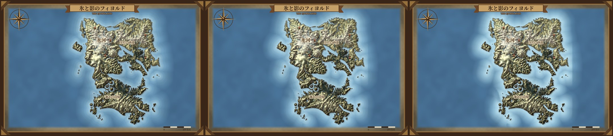
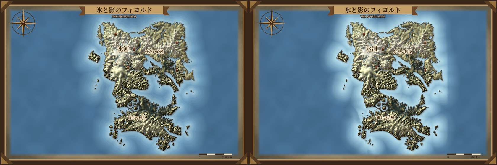
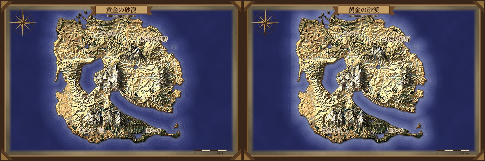

海の浅瀬を明るくする試作(プログラム)
概要: ユーザー指示「今の絵に足す形で浅瀬だけ色を明るくしてみて」を試しました。海の格子の高さの値が高い所を「浅瀬」とみなし、今の海の色(海岸からの距離で決めた濃淡)の上に、明るさを足しました。海岸の周りに明るい帯が出ましたが、データの性質上、右側などに直線の境目が残ります。
追加: 前と改善の平均にした版(ユーザー案)
左=今まで / 中=平均(浅瀬の足し方を半分に) / 右=浅瀬を全部足した版。直線の境目が目立たなくなり、浅瀬の明るさは残りました。この中の版を、今の標準にします(足し方は約27%)。 絵番号 E075
絵番号 E075 絵番号 E076
絵番号 E076

絵番号 E074絵番号 E075絵番号 E076境目は完全には消えていない(世界6の右側にうっすら残る)。3枚の目視のみ。コード: gstyle10_gen.py
左=今まで / 右=浅瀬を全部足した版

絵番号 E071世界6(フィヨルド)
 絵番号 E072
絵番号 E072世界5(大陸3つ)

絵番号 E073世界7(砂漠)
分かったこと(データ)
- 海の格子の高さの値は5〜49。大半が最も浅い値で、深い所の細かい起伏はほぼない。
- 値が20以上の海は、海全体の約4〜5割もあり、海岸の周りだけでなく、地図の内側の広い四角い範囲になっていた。生成の時に世界を縮めて左右を海にした名残と思われる(推測)。深さのデータとは言えない。
- そこで、そのまま使うと大きな四角が明るくなったため、「海岸から約80画素以内」に限って足した。
目で見た評価(私の印象。判断はユーザーに)
- 良い点: 海岸の周りが明るい水色になり、浅い海の雰囲気が出た。Geminiの「岸が明るく沖が濃い」に近い。
- 悪い点: 四角い範囲の端が直線の境目として残る(世界6の右側など)。帯が太く、岸の波線と重なる所がある。
限界・未確認
- 3枚の目視のみ。足した強さ(約55%)と範囲(80画素)は私が試して決めた値。
- 海の値は本当の深さではない可能性が高いので、「浅瀬」の位置も本当の浅瀬とは限らない。
- 直線の境目の消し方(範囲の縁を濃淡でぼかす)は未実施。
コード: gstyle9_gen.py。